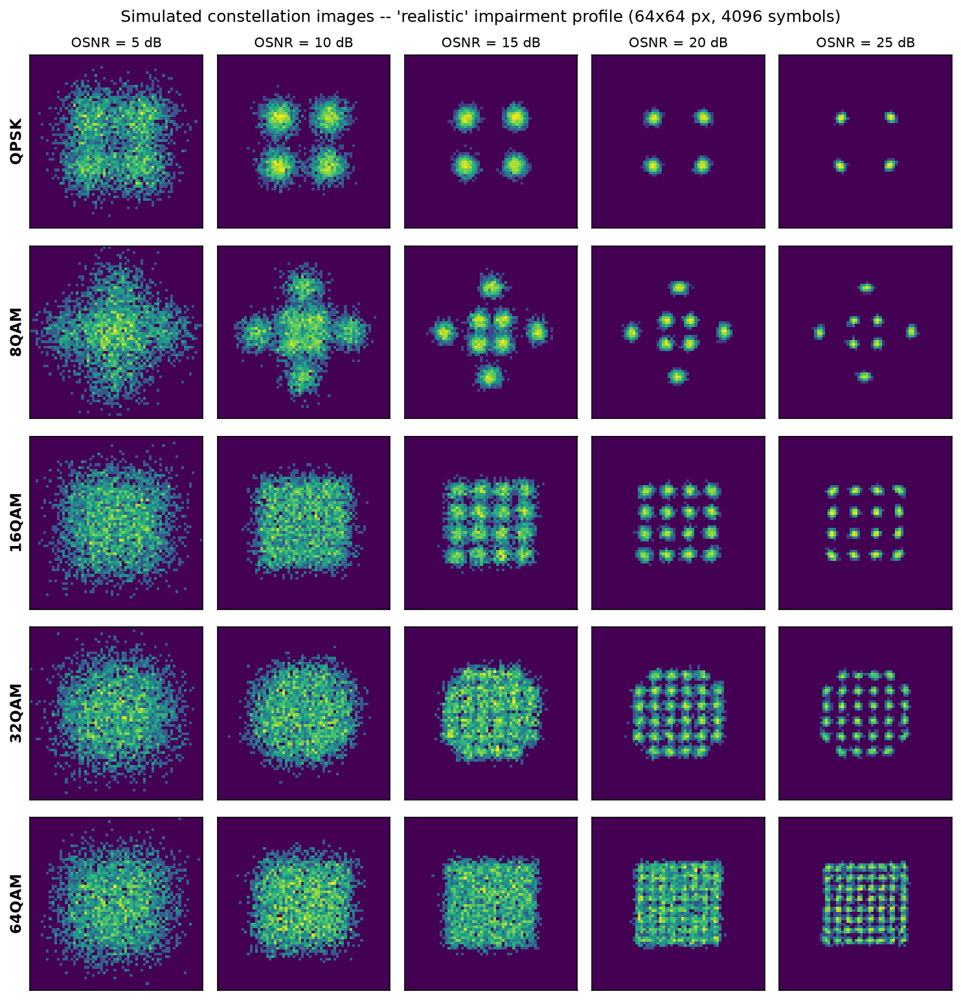

Everything in the paper, built up from light in a fibre. Written for someone who has never taken an optical communications course, and who has to present this.
The mid-sem guidelines require Turnitin plagiarism under 10% and AI plagiarism under 20%. This page was written by an AI assistant, so pasting its sentences into the report is exactly what the detector looks for. Use it to understand the work and to structure the report — then write every sentence yourself. Numbers, tables and figures are safe; prose is not.
An optical fibre is a strand of very pure glass, thinner than a human hair. You shine light in one end and it comes out the other, hundreds of kilometres later. To send information down it, you have to vary the light in some way that the far end can measure.
A light wave has three properties you can vary:
The simplest possible scheme is to switch the light on and off: on is 1, off is 0. That sends one bit per pulse. It works, and it is how early fibre links operated, but it wastes the fibre. If you can only send one bit per pulse, then a fibre running at 32 billion pulses per second carries 32 gigabits per second and not one bit more.
One transmitted pulse, carrying a specific combination of amplitude and phase. A symbol is the atom of transmission. If you allow four distinguishable symbols instead of two, each one carries two bits instead of one, and the same fibre at the same pulse rate carries twice the data.
This is the central trick of modern optical transmission: do not just switch the light on and off — place it at one of many agreed (amplitude, phase) combinations. The set of allowed combinations is called the modulation format.
To measure phase, the receiver mixes the arriving light with light from its own local laser (a local oscillator). Interference between the two reveals the phase difference. A receiver that does this is a coherent receiver, and it is what makes phase-based formats possible. A simple photodiode measures only brightness and would throw the phase away entirely.
Amplitude and phase together describe a point in a plane, the same way a distance and a bearing describe a location on a map. Engineers prefer to write that point in rectangular coordinates instead:
Every symbol is one point on the I–Q plane. Distance from the origin is amplitude; angle from the I-axis is phase. Plot all the symbols in a capture and you get a constellation diagram. That picture is the raw material of this entire project.
Push further and you get denser formats. QAM stands for Quadrature Amplitude Modulation — vary both amplitude and phase. The number in front is how many distinct points the format defines.
| Format | Points | Bits/symbol | Shape on the I–Q plane |
|---|---|---|---|
| QPSK | 4 | 2 | 2×2 square |
| 8-QAM | 8 | 3 | star — 4 inner + 4 outer, rotated 45° |
| 16-QAM | 16 | 4 | 4×4 square |
| 32-QAM | 32 | 5 | cross — 6×6 grid minus the 4 corners |
| 64-QAM | 64 | 6 | 8×8 square |
The fundamental trade-off: more points means more bits per symbol, but the points sit closer together, so a smaller amount of noise is enough to push a received point across the boundary into its neighbour's territory. 64-QAM triples QPSK's data rate and is far more fragile. Everything in this project descends from that tension.
Two of our five formats — 8-QAM and 32-QAM — are deliberately non-square. A classifier that only ever sees square grids of varying density has an artificially easy job: it can essentially count grid spacing. Including a star and a cross forces it to learn real shape. A reviewer who noticed five square formats would say so immediately.

If fibre were perfect, the received constellation would be five crisp dots and a lookup table would solve this. It is not perfect. Five separate physical effects distort the picture, and understanding them is most of understanding the paper.
Glass absorbs and scatters light, so the signal fades as it travels. Roughly every 80 km an EDFA (erbium-doped fibre amplifier) boosts it back up. An EDFA is a length of fibre doped with erbium atoms that are pumped into an excited state; the arriving signal stimulates them to emit more light in step with it, amplifying the signal.
The catch: some of those excited atoms decay on their own, emitting light with random phase and no relation to your data. This is ASE — amplified spontaneous emission — and every amplifier along the route adds more of it. ASE accumulates while the signal does not, so a long link is a noisy link.
The ratio of signal power to noise power, quoted in decibels. High OSNR (25 dB) means a clean link and tight constellation points. Low OSNR (5 dB) means a noisy link and points smeared into clouds. It is the single most important number describing a link's health.
A logarithmic ratio: dB = 10 × log₁₀(power ratio). It is logarithmic because optical powers span many orders of magnitude. Rules of thumb: 3 dB is a factor of 2, 10 dB is a factor of 10, 20 dB is a factor of 100. So an OSNR improving from 7 dB to 14 dB is not "double" — it is roughly five times more signal per unit noise.
| Impairment | Physical cause | What it does to the picture |
|---|---|---|
| ASE noise | spontaneous emission from the amplifier chain | every point spreads into a fuzzy cloud |
| Residual chromatic dispersion | different wavelengths travel at slightly different speeds, so a pulse spreads out and overlaps its neighbours | points blur into each other (inter-symbol interference) |
| Laser phase noise | a laser's phase drifts as a random walk; how fast is set by its linewidth | angular smearing — points stretch into arcs |
| Frequency offset | the transmit laser and the receiver's local oscillator are separate physical devices and never exactly agree on colour | the whole constellation slowly rotates |
| I/Q imbalance | the receiver's two arms have unequal gain, and its optical hybrid is not exactly 90° | the square grid skews into a parallelogram |
Most student projects simulate only the ASE noise. Modelling the other four is what makes this defensible to an optical-communications reviewer — and, more importantly, it is what makes the robustness experiment possible, which turned out to be the most interesting result in the project.
Order matters enormously here, and getting it wrong produces physically impossible results. This is the chain our simulator implements:
The frequency offset must be applied before carrier phase recovery, not after. Cancelling residual frequency offset is one of CPE's jobs; a real receiver's phase tracker follows that slow rotation and removes it. The first version of the simulator applied the offset afterwards, so nothing removed it, and a mere 1 MHz of offset smeared every constellation point into a 46° arc. Constellations looked destroyed even at 25 dB, which is not what a working receiver produces.
The fix: build the total phase (random walk plus linear ramp), let the block-averaging CPE remove the slowly-varying part of both, and keep only what survives — the variation within one 64-symbol block. A wider linewidth or a bigger offset still leaves a bigger residual, which is the realistic behaviour, but the constellation stays recognisable. This shows you understand what the DSP does, not just how to call a function.
A favourite examiner question, and an easy one to get wrong.
So at an OSNR of 25 dB the receiver really sees about 23.9 dB. Reporting against OSNR without stating this conversion overstates your electrical SNR by roughly 1 dB, and a reviewer in this field will notice.
Older optical networks were static: a link was configured once for one format and left alone. Modern networks are elastic — the transmitter picks its format based on current link conditions. 64-QAM on a short clean route to maximise throughput; QPSK on a long noisy one to stay reliable. The format can change as conditions change.
This creates a problem at the far end. The receiver cannot demodulate anything until it knows which format arrived. Traditionally the two ends negotiate over a separate control channel. That works but it is slow, it is one more thing to configure, and it fails exactly when the link is degraded.
Working out the format directly from the received signal itself, with no control channel. The receiver looks at the constellation and decides. This makes the network faster to reconfigure and more autonomous, and it is a component of optical performance monitoring (OPM) — the broader practice of inferring a link's health from the signal rather than from separate test equipment.
So the task is a five-way classification problem: given a capture of received symbols, output which of QPSK, 8-QAM, 16-QAM, 32-QAM or 64-QAM was sent. That is what all five of our classifiers do.
Here is the state of the published literature. Before deep learning, MFI was done by computing a handful of statistics from the received symbols — chiefly cumulants — and feeding them to a classical classifier such as a support vector machine. Then people started feeding constellation images to convolutional neural networks, and reported large gains. Paper after paper confirms it: CNN on images beats SVM on features.
That comparison is confounded. It changes two things simultaneously:
| Classical approach | Deep-learning paper | |
|---|---|---|
| Model | shallow (SVM) | deep (CNN) |
| Input | 15 hand-picked numbers | a full 2-D image |
So when the CNN wins, nobody can say why. Is it because deep networks are more powerful learners? Or because the image representation preserves information that 15 summary statistics throw away? Those are completely different conclusions with completely different engineering consequences, and the literature does not separate them.
We add a classifier nobody usually bothers to include: a multi-layer perceptron trained on exactly the same 15 features the SVM sees. An MLP is a deep, trained neural network. It just does not get the image.
Either outcome would have been a real finding. If the MLP had landed near the CNN, the answer would be "model capacity is what matters". It landed next to the SVM instead. The MLP is the critical control, and it is the contribution of the paper. It turns the baselines from an obligation into the core result.
There is no public dataset of labelled optical constellation captures. We checked. A real testbed — tunable laser, coherent receiver, real spooled fibre, an optical spectrum analyser — costs crores. So we simulate the link, implementing the full chain from Part 3 in NumPy.
Simulation is not merely a fallback here. It is what makes the central claim measurable: we need exactly controlled OSNR sweeps, the same signal realisation rendered three different ways, and the ability to train on one channel and test on a deliberately different one. No measurement campaign would give us that cleanly.
A simulator you wrote yourself proves nothing unless you can check it against something external. We can, exactly.
For a noiseless, unit-power constellation, the normalised fourth-order cumulant |C40|/C21² is an exact finite sum over the constellation points — pure algebra, no simulation involved. If the simulator is faithful, measuring that quantity from generated data must reproduce the algebra.
| Format | Exact theory | Simulated | Error |
|---|---|---|---|
| QPSK | 1.0000 | 0.9997 | 0.0003 |
| 8-QAM (star) | 1.5274 | 1.5251 | 0.0023 |
| 16-QAM | 0.6800 | 0.6830 | 0.0030 |
| 32-QAM (cross) | 0.1900 | 0.1868 | 0.0032 |
| 64-QAM | 0.6190 | 0.6198 | 0.0007 |
All five match to within 0.004. And the three square formats independently match the constants published in the literature (1.0000 / 0.6800 / 0.6191), which validates the analytic formula itself rather than just our use of it.
Square QAM has one agreed layout, so its cumulants are standard constants you can look up. But 8-QAM and 32-QAM each have several standard variants with different geometries and therefore different cumulants. We initially hardcoded literature values for those two and the check "failed" — the simulator was right; the reference numbers came from a different variant. Deriving the value from the constellation actually used avoids that trap entirely. If asked "how do you know your simulator is correct?", this is the answer.
Roughly 500 MB, about 4.5 minutes to generate. It is not in the git repository, deliberately: every random number is seeded from config.SEED = 42, so anyone can rebuild it byte-for-byte with one command. Ship the recipe, not the cake.
This is the heart of the experimental design. Every capture is converted into three different representations, all from the same underlying realisation, so the comparison between them is exactly fair — no model gets a different or luckier signal.
| Representation | Shape | Human pre-processing involved |
|---|---|---|
| Raw I/Q | 2 × 512 | none — the symbols as received |
| Constellation image | 64 × 64 | binning into a 2-D histogram |
| Statistical features | 15 | a great deal — chosen cumulants and amplitude statistics |
The obvious way to make a constellation image is to draw a matplotlib scatter plot and save the PNG. We bin into a 2-D histogram instead, for three reasons:
We then apply log(1+x) scaling to the bin counts. Cluster centres receive vastly more hits than the sparse noise tails; on a linear scale those tails round to nearly zero and disappear. A log scale lifts the faint detail so the outer constellation points stay visible — the same reason astronomical images are displayed logarithmically.
The I/Q axis range is fixed at ±2.5 for every class. After normalisation the signal never exceeds about 1.53, so the rest is noise headroom. If each format were auto-scaled to its own extent, the zoom level itself would leak the answer and the CNN could "cheat" without learning shape at all.
Three convolutional blocks (Conv 3×3 → BatchNorm → ReLU → MaxPool 2×2) with 16, 32 and 64 channels, then dropout and two dense layers.
| Layer | What it does | Why it is there |
|---|---|---|
| Conv2d 3×3 | slides a small learned filter across the image | detects a local pattern anywhere it occurs, reusing the same weights — far fewer parameters than a dense layer |
| BatchNorm | rescales each layer's outputs to roughly zero mean, unit variance | faster and more stable training |
| ReLU | max(0, x) | the non-linearity. Without it, stacked linear layers collapse mathematically into a single linear layer |
| MaxPool 2×2 | keeps the largest value in each 2×2 square | halves the image; a cluster shifted by one pixel is still the same cluster |
| Dropout 0.3 | randomly zeroes 30% of activations during training only | the main defence against overfitting — forces redundant, distributed representations |
Global average pooling discards where each feature was found. For photographs that is desirable: a cat is a cat in any corner of the frame. Here it would be actively harmful, because the geometric arrangement of clusters in the I–Q plane is the signal. So the 2-D model flattens.
The 1-D model below makes the opposite choice for the opposite reason. Being able to explain why both are correct demonstrates you understand the architectures rather than having copied them.
Three 1-D convolutional blocks (kernel sizes 7, 5, 3) followed by global average pooling — correct here, because the symbol stream is stationary, so the absolute position of a symbol within the capture carries no information at all.
We predicted this model would struggle, and said so before running it. The transmitted symbols are independent and identically distributed, so their order carries almost no class information — but a 1-D convolution is built precisely to exploit order. The network is being asked to estimate a distribution from a sequence. The constellation image hands that distribution over directly, because a 2-D histogram is a density estimate. This is the clearest single statement of why representation matters.
All three see the identical 15 numbers: seven normalised higher-order cumulants (|C20|, |C40|, |C41|, |C42|, |C60|, |C61|, |C63|) plus eight amplitude and phase statistics.
Moments — the mean, the mean square, the mean fourth power and so on — describe the shape of a distribution. Cumulants are specific combinations of moments, constructed so that the contribution of Gaussian noise cancels out at fourth order and above. That makes them a noise-robust "fingerprint" of the underlying constellation, and each QAM order has a distinct theoretical cumulant value. This is the standard pre-deep-learning approach to MFI, which is exactly why it is the fair baseline to compare against.
Count the distinct distances from the origin in each format: QPSK has 1 amplitude ring, 8-QAM has 2, 16-QAM has 3, 32-QAM has 5, 64-QAM has 9. The spread and shape of the amplitude histogram is therefore genuinely informative, independent of the cumulants.
The 15 features live on wildly different scales (cumulant ratios sit around 0.5; peak-to-average power ratio can exceed 10). Both k-NN and the RBF-SVM operate on distances, so a large-range feature would dominate purely because of its units.
But the deeper reason is correctness. Inside a Pipeline, the scaler learns its mean and standard deviation from the training data only. Computing those statistics over the whole dataset would leak information about the test set into training and inflate the reported accuracy. This is the single most common silent mistake in applied ML papers, and reviewers look for it.
The data is divided into training, validation and test sets, stratified on (format, OSNR) — every one of the 5 × 21 = 105 cells is split in the same proportions. A plain random split could, by chance, load the test set with hard low-OSNR cases and make the results meaningless. It also matters because we report accuracy per OSNR level, which needs enough test samples in each cell: we get about 90 per cell, 9,450 test images in total.
Train is what the model learns from. Validation decides when to stop training and which weights to keep — because we make decisions using it, it is no longer a neutral judge of performance. Test is touched exactly once, at the very end. It is the only honest number, and it is the one that goes in the paper.
| Choice | Value | Why |
|---|---|---|
| Formats | 5 | published MFI papers use 4–6; three would make the task artificially easy. Two of ours are non-square |
| OSNR range | 5–25 dB | covers "hopeless" to "clean"; 21 points in 1 dB steps draws a smooth curve |
| Symbols per capture | 4,096 | a power of two, and enough to visibly populate all 64 clusters of 64-QAM |
| Image size | 64×64 | must resolve 64-QAM's 8×8 grid, which needs roughly 40 px minimum. 32×32 cannot; 128×128 costs 4× the compute for little gain |
| Symbol rate | 32 GBaud | a standard commercial rate, and it feeds the OSNR→SNR conversion |
| CPE block | 64 symbols | a short block tracks fast phase noise but is noisy; a long block is smooth but lags. 64 is the usual compromise |
| Conv blocks | 3 | after three poolings, one feature-map pixel covers about 30×30 of the input — the scale of the pattern. The ablation tests this rather than asserting it |
| Channels | 16→32→64 | standard pyramid: as the image shrinks spatially, allow more feature types |
| Kernel | 3×3 | the smallest filter with a centre and surround. Two stacked 3×3 layers see the same area as one 5×5 with fewer parameters and an extra non-linearity. Default since VGG (2014) |
| Batch size | 128 | per-sample updates are noisy; whole-dataset updates give one update per pass. 128 gives a good gradient estimate and about 345 updates per epoch |
| Optimiser | Adam, lr 1e-3 | maintains a separate auto-tuned step size per weight; works well without hand-tuning |
| Weight decay | 1e-4 | mild L2 regularisation — discourages large weights, a cheap second defence against overfitting |
| LR schedule | halve on plateau | big steps early to find a good region, small steps later to settle into it |
| Early stopping | patience 4 | if validation accuracy has not improved in 4 epochs the model is starting to memorise. Stop and keep the best weights |
| Seeds | 42, 43, 44 | lets us report mean ± standard deviation. A single run could be luck |
| Experiment | The question it answers | Why a reviewer cares |
|---|---|---|
| Main comparison | Which representation wins, with the algorithm held constant? | the paper's central claim |
| Generalisation | Does it work at OSNR values never seen during training? | rules out "it just memorised each noise level" |
| Ablation | Do the architecture choices actually matter? | converts "I chose 3 layers" into "3 was tested, here is the evidence" |
| Capture length | How few symbols are enough? | the practical deployment question, rarely answered |
| Robustness | Does a model trained on a clean channel survive a dirty one? | the honest answer to "your simulation is idealised" |
| Confidence | Does the model know when it is failing? | a deployed monitor sees its own confidence, never its accuracy |
| Impairment tolerance | Which specific impairment breaks which model? | turns a black-box result into a diagnosis |
The robustness experiment is the most valuable one. Every simulation-based MFI paper faces the objection "you trained and tested on the same idealised channel, so of course it worked." Training on an ideal channel (AWGN only) and testing on a severe one answers that directly. A large drop is a genuinely useful negative result; a small drop is a strong positive claim. Either way there is something to report — and this experiment is only possible because the data is simulated.
All numbers are mean ± standard deviation over three seeds. Every one is generated from the results JSON by paper/make_macros.py — 135 numbers across the manuscript, none typed by hand, all re-derived and checked by audit_project.py.
| Model | Input | Accuracy | Parameters |
|---|---|---|---|
| CNN | 64×64 image | 98.73 ± 0.12 % | 285,941 |
| SVM | 15 features | 93.41 ± 0.10 % | — |
| MLP | 15 features | 93.08 ± 0.10 % | 11,013 |
| k-NN | 15 features | 91.58 ± 0.08 % | — |
| IQ-CNN | raw I/Q | 86.56 ± 4.64 % | 27,781 |
Three fundamentally different algorithms on identical features span 1.83 points. Changing the representation to the density image gains 5.32 points over the best of them — 2.9 times larger. And note that the MLP, a deep network, came out below the SVM, a shallow one: adding depth to the feature pipeline bought nothing at all.
| Model | OSNR for ≥95% accuracy | OSNR for ≥99% |
|---|---|---|
| CNN | 7 dB | 10 dB |
| SVM | 14 dB | 18 dB |
| k-NN | 15 dB | 18 dB |
A 7 dB OSNR margin. Quote this rather than the accuracy percentage, because it converts directly into reach in kilometres or number of amplifiers — which is what an optical engineer actually budgets.
Train on one channel, test on another. The bottom row is the matched case that most papers report; the top row is what happens when the real link turns out worse than the one you trained on.
| Trained on | CNN → severe | SVM → severe |
|---|---|---|
| clean (AWGN only) | 89.78 % | 21.84 % |
| realistic | 91.17 % | 71.98 % |
| severe (matched) | 97.84 % | 94.03 % |
Chance level is 20%. The feature-based classifier collapses to essentially random guessing on a channel it never saw, while the CNN degrades gracefully. The reason is mechanistic, not mysterious: cumulants are statistics of an assumed signal model. Change the impairments and the learned decision boundaries stop corresponding to anything real. This is a deployment claim, not merely an accuracy claim.
Accuracy is visible only to the experimenter. A deployed monitor knows just two things: what it predicted, and how confident it was. So the operationally relevant question is whether the model's own confidence flags its failure.
We take the maximum softmax probability as the confidence score — the quantity a real system would threshold on — and use Platt scaling to get the equivalent from the SVM. Under matched conditions all models are well calibrated, within one point of their accuracy. Under mismatch they diverge sharply: the SVM claims roughly twice the accuracy it actually achieves.
Confidence still ranks errors usefully for both models, so gating on it should restore reliability. The cost of that gating is where the representations separate. At a 90% confidence gate on the severe channel, the CNN still answers 86.9% of inputs. The SVM answers 0.2% — a coverage ratio of about 447×. The feature-based monitor can be made accurate only by silencing it: at that operating point it responds to roughly two inputs in every thousand.
To our knowledge, the interaction between input representation and failure self-detectability has not previously been reported. Uncertainty quantification for modulation classification has been studied, but for a single representation. If anyone asks what is new here, this and the cross-channel robustness result are the answer — not "we used a CNN".
| Experiment | Result |
|---|---|
| Unseen OSNR | CNN scores 97.45 ± 0.16 % on OSNR levels withheld entirely from training — a drop of only 1.27 points. It learned the physics, not the specific noise levels. |
| Capture length | The CNN with 512 symbols (94.08%) beats the SVM with 4,096 (93.82%). An 8× shorter capture still wins — directly relevant to how fast a monitor can respond. |
| Ablation | All six architecture variants land within 1.26 points of each other, despite a 9.2× range in parameter count and a 49× range in compute. Capacity is not the binding constraint. |
The ablation used a single seed, and the non-monotonic behaviour across widths shows run-to-run noise of the same order as the differences between variants. The supported claim is therefore "capacity is not the limiting factor", not "4 channels is optimal". Over-claiming from one seed is precisely what a reviewer catches.
The impairment tolerance experiment sweeps each distortion separately to find what breaks which model. I/Q imbalance is what destroys the cumulant features: at 2.5 dB of gain imbalance the SVM falls to 20.35% while the CNN holds 95.48%. At 14° of phase skew the SVM is at 20.10%, the CNN at 96.35%.
But on residual chromatic dispersion the result inverts. At 150 ps/nm the SVM scores 80.14% and the CNN only 54.89%. We report this prominently rather than burying it. It is a genuine inversion of the paper's own headline, and it is the question most likely to be asked in the viva — prepare it.
Running python verify_project.py executes independent checks that re-derive results rather than trusting the saved numbers.
| Check | What it proves |
|---|---|
| Recompute accuracy | reloads the trained weights and recomputes test accuracy from scratch; must match the reported figure to nine decimals |
| No data leakage | train, validation and test sets share zero samples |
| Constellation theory | the simulator matches exact analytic cumulants, and square formats match published constants |
| Noise power | measured SNR matches the target to within 0.02 dB; noise is Gaussian, zero-mean and equal in I and Q |
| Stratification | every (format, OSNR) cell is split within 2% of the intended 15% |
| Shuffled-label test | train on randomised labels and accuracy collapses to the 20% chance level |
That last check is the one that catches "too good to be true" results. If a model still scores well after you destroy the labels, you have a leak somewhere.
It initially failed two noise checks. Investigation showed the check was wrong, not the data: we were measuring noise as 1.004 − 1.000, a difference of two nearly-equal numbers, which amplifies random scatter to ±0.87 dB. The fix was to measure noise directly against the known transmitted symbols. The tolerance then tightened from 0.05 dB to 0.02 dB and everything passed. When a check fails, find out which side is broken before assuming.
State these plainly. Reviewers respect a clear limitations section, and examiners often ask about them directly — having the list ready turns a hard question into an easy one.
The guidelines allow 10–15 slides in 10 minutes. Fourteen is too many at that length; 12 gives you about 50 seconds each and room to breathe. Each maps to a part above, so whoever builds the deck can pull content straight from the corresponding section.
All figures are in the repository under figures/ at 300 dpi, ready to drop into slides.